CD
Intro
| 自然牙 | CD | |
|---|---|---|
| Mucosa 支持面積 | 上下顎 PDL: 45 cm2 | 上顎 CD：22.96 cm2 |
| 下顎 CD：12.25 cm2 | ||
| 咬合力 | 200N | 60-80 N (1/3) |
| 每日咬合時間 |
|
Denture movement |
- 全口無牙會變成 class III
- Articular eminence
- 舊觀念： 變平（flattening）
- 現代觀念：remodeling
- flatten, maintain, 局部重塑
- Condyle
- 位置可能較前上
- disc
- 可能 thinning, position 改變
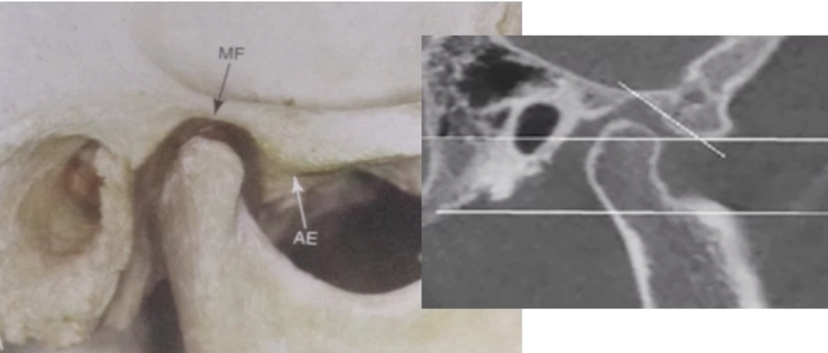
- 在 CD 上會用最後位當 CR
- 穩定
- 吞口水位置
- OVD
- Occlusal Vertical Dimension
骨吸收與時機
- 拔牙後前牙 Residual ridge 吸收
- 第一年: 上顎2-3mm、下顎4-5mm
- 之後每年下顎 0.1~0.2 mm
- 下顎前牙區吸收速率比例是上顎的4倍
- 6 個月是最佳時機
- 下顎推薦做 Implant over denture
- 影響因子
- 下顎 >上顎
- 方臉 (咀嚼力)
- Alveoloplasty 會加速
- Healing
- 贗復物因素
- Osteoporosis (骨質疏鬆症): 上顎嚴重

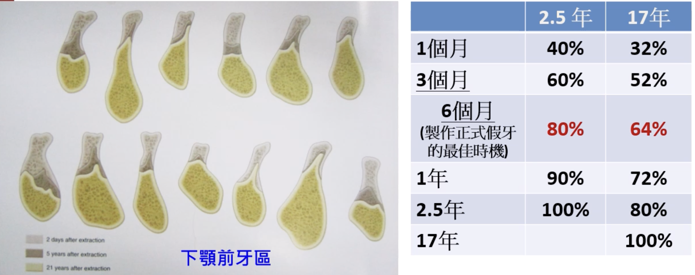
Mucosa
會影響 CD 配戴的因素
- Oral lichen planus 常見
- 下顎後牙 Buccal
- EM (少見)
- pemphigoid/pemphigus
- SLE
- BMS
Denture stomatitis
- 上顎>下顎 (因為接觸面積)
- Newton’s classification
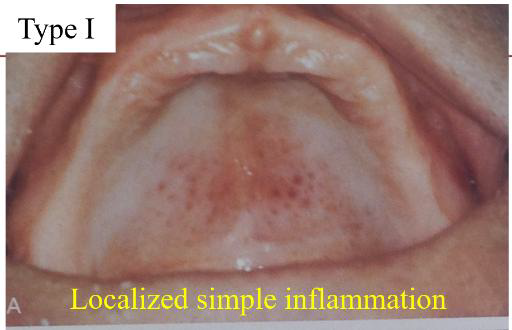
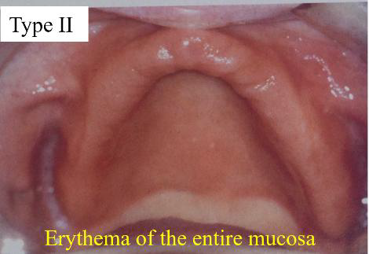
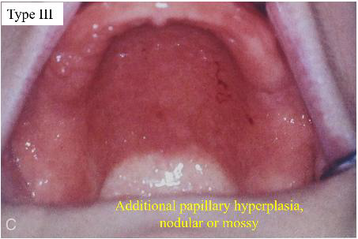
Angular cheilitis
- 垂直高度(OVD)不足關
- 也可能是口腔衛生差、或是念珠菌感染
綜合性症候群(Combination syndrome)
- 上顎CD；下顎 Kennedy Class I RPD 患者因為咬力不平均造成
- 上顎前牙區齒槽骨吸收、下顎前牙變長的現象
- 因重力影響，上顎粗隆往下掉、咬合平面歪掉(Down-growth of the maxillary tuberosity)
- 出現前庭區腫裂齦瘤(Epulis fissuratum)
- 戽斗
- 避免combination syndrom
- stress break
- 調整咬合
- 下顎lingual plate阻止前牙長長
- 上顎留一些殘根幫助吸收咬合力
檢查和診斷
-
牙弓大小(Arch size)
-
牙弓形狀(Arch form)
-
無牙脊的形狀
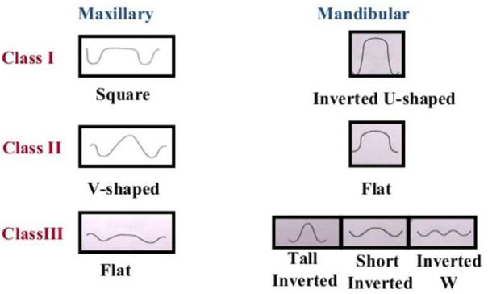
-
上下顎無牙脊的相對位置(Ridge relationship)
- ：CD牙要排成 Class I
-
上下顎的無牙脊平行度
- 通常要是平行的
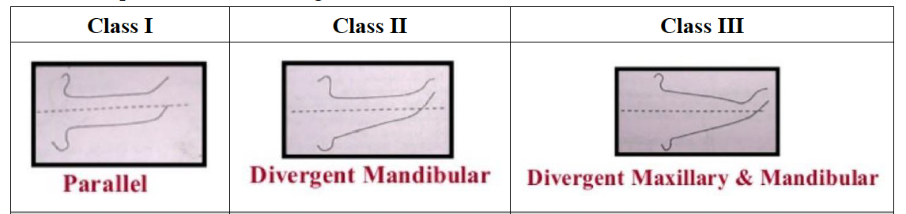
側方喉形 (Lateral throat form)
- 前: mylohyoid m.
- 側: superior pharyngeal constrictor m.
- 後: palatoglossus m.
- 內: 舌頭(tongue)
- 愈難把肌肉或舌頭推開，代表側方喉形愈小，假牙難穩定
- Neil’s classification：由curtain後緣與retromolar pad的夾角分類
- Class I：90度，最適合做假牙(出現比例：70%)
- Class II：60度(出現比例：25%)。
- Class III：45 度，最狹窄(出現比例：5%)
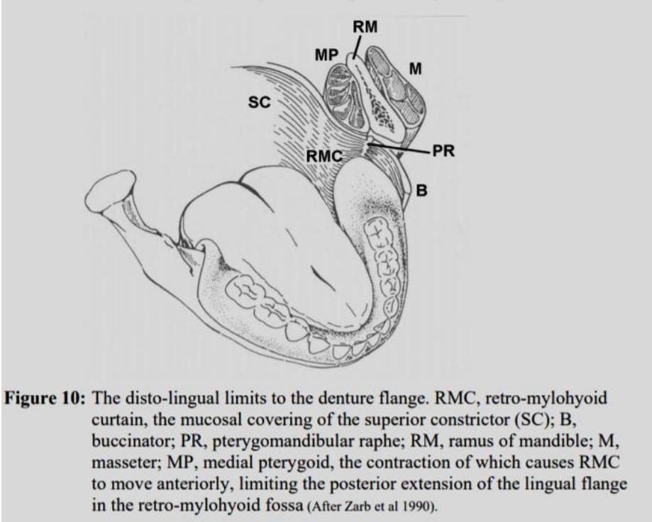
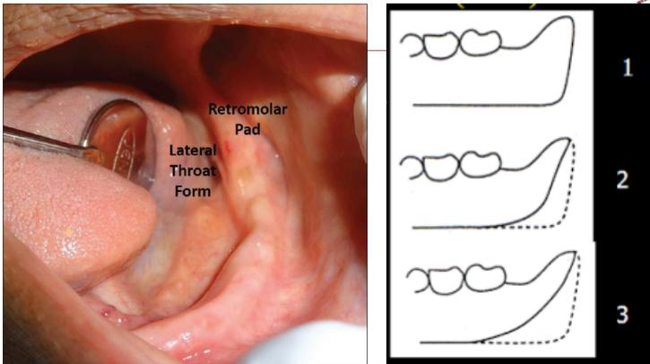
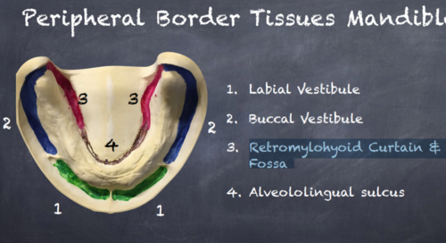
上方喉形 (Palatal throat form)
- 做直或站立 soft palate 才掉下來可以看 PTF
- House’s classification
- Class I：可以往後延伸5-13mm。(超過5mm的movable tissue可提供post dam，假牙的穩定性最好)
- Class II：可以往後延伸3-5mm。(1-5mm的movable tissue可提供post dam
- 大部分
- Class III：往前延伸3-5mm。(少於1mm的movable tissue可提供post dam)可能會一直需要修，造成最後只壓在硬顎上而缺乏retention。
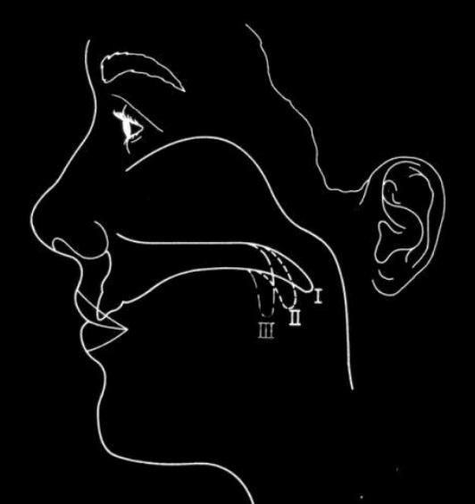
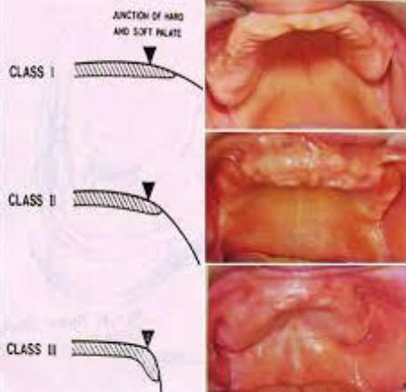
Border molding
| 部位 | 對應解剖構造 | 臨床動作 (患者或醫師) |
|---|---|---|
| 唇側區 (Labial) | 唇繫帶、口輪匝肌 | 醫師將上唇向下、向內牽拉；患者做噘嘴、微笑動作。 |
| 頰側區 (Buccal) | 頰繫帶、頰肌、顴突 | 醫師將頰部向下、向內牽拉，並前後移動；患者張大嘴。 |
| 後外側 (Distobuccal) | 冠突 (Coronoid process) | 患者將下顎向左右移動（藉此決定冠突留給義齒的空間）。 |
| 後緣 (Posterior) | 振動線、PPS | 患者發出「Ah」短促音；或進行吞嚥動作（Swallow）。 |
| 部位 | 對應解剖構造 | 臨床動作 (患者或醫師) |
|---|---|---|
| 唇側區 (Labial) | 唇繫帶、口輪匝肌、頦肌 | 醫師將下唇向上、向內牽拉；患者噘嘴。 |
| 頰側區 (Buccal) | 頰繫帶、頰肌、頰棚 (Buccal shelf) | 醫師將頰部向上、向內牽拉；患者張大嘴。 |
| 前舌側 (Ant. Lingual) | 舌繫帶、下頜舌骨肌 (Mylohyoid m.) | 患者舌尖舔上唇、舔兩側頰部、舌頭頂前牙。 |
| 後舌側 (Post. Lingual) | 內側翼肌 (Medial pterygoid m.) | 患者用力吞嚥；或舌頭用力伸出。 |
| 遠心端 (Distal) | 後磨牙墊 (Retromolar pad) | 患者張大嘴（確保不干擾到翼下頜韌帶 Pterygomandibular raphe）。 |
咬合
決定咬合平面
上顎
Camper’s Line
- 平行瞳孔間線
- lip中間往下 0.5~2.0mm
- Camper’s Line 平行 (鼻翼下緣到耳道中點)
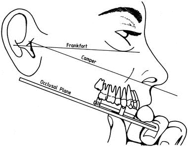
H-IP Plane
- Hamulus-Incisive-papilla Plane: Incisive Papilla與由左、右 Hamulus Notch
- HIP Plane會與水平面夾約 6-14度
- incisive papilla 向下 8mm, hamulus notch向下 12mm，即為咬合平面
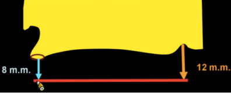
Fully Balance 達成
- 牙齒旋轉角度 （不旋轉會有干擾）
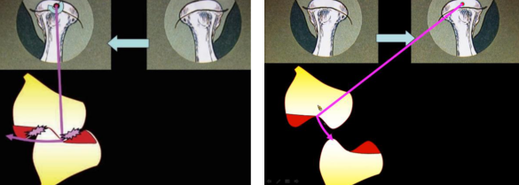
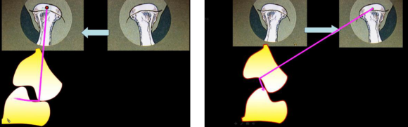
- 面弓轉移誤差的影響
- Protrusion 因為同時增加 CG, IG 所以對排牙相對角度沒差
- Lateral Movement 因為把 working side CG 當做 0° 所以會產生誤差
排牙順序
- 上前
- 上後
- 下 6 → 5 → 4 → 7
- 下 12 （調到 Protrusion 再 edge to edge)
- 下 3
- 推至 balancing side以及 w orking side後牙接觸最多處，將咬合器螺絲旋緊固定好 ，再 working side的犬齒放上去，讓其切端對切端
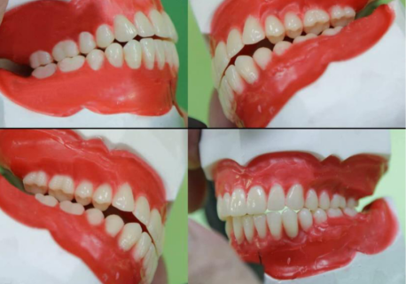
排牙學閥
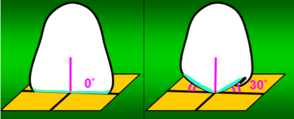
零度排牙法
- Cusp 從 Incisor guidance 漸變到 Condylar guidance
- Working side condylar 不滑移 → 0°
- Cusp 必須 30-27-23.5-17.5-7 否則 Working Side Interference
- 太麻煩 → 0° Cusp
- Christensen’s phenomenon 用 Compensating Curve, 下顎後牙斜坡補
| 特性 | 1. 按照曲線排 (Balanced Monoplane) | 2. 按照平面排 (Neutrocentric Concept) |
|---|---|---|
| 核心理念 | 追求平衡：即使牙齒沒牙尖，也要透過排列達成運動時的接觸。 | 追求穩定：捨棄平衡，將力完全垂直導向齒槽嵴。 |
| 平衡狀態 | 具有 Balanced Occlusion (前伸與側向皆接觸)。 | 無平衡 (Non-balanced)。 |
| 臨床機制 | 利用 Compensating Curve 或 Balancing Ramp。 | 嚴格遵守 Flat Plane (水平面)，且通常不設 Overbite。 |
| 代表學派 | 傳統平衡合學派 (Gysi, Hanau)。 | DeVan 的中性理論 (Neutrocentric Concept)。 |
| 適用對象 | 齒槽嵴條件尚可，追求更好咀嚼效率與穩定度者。 | 齒槽嵴嚴重萎縮、手部運動不協調、或習慣咬合不穩者。 |
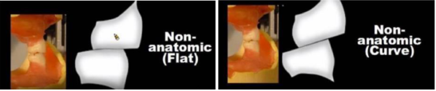
Lingualized Occlusion
-
Danger Zone 不受力 → 尖的 Upper lingual Cusp 咬平的 Lower
-
力量往下顎舌側 → 不穩
-
上牙選 33度，下牙選 10-20度或 0度牙都可
-
調整咬合的時候要調整下顎牙齒
馬老的分類器
秀外慧中
- 圓的貝殼牙
- 齒頸部部分修窄，切緣修圓
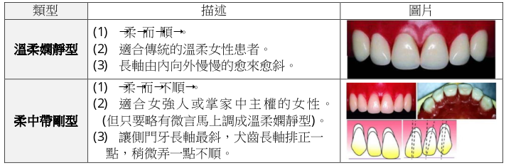
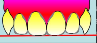
豔麗四射
-
差別性很大(藉以吸引目光)，但又騷中帶柔：要選正中門齒與側門齒差距很大
-
牙齒由兩副前牙中分別選取。
- 較大、較長、唇面較圓，切緣角也較圓的正中門齒，特長的正中門齒「易於吸引別人目光」、「成為眾人目光的焦點」。
- 較小、較短、唇面較圓，切緣角也較圓的側門齒
-
長長的正中門齒修得「不太長」，且讓它呈現「柔柔的美感」
- 把正中門齒切緣略向內
- 光影調理
- 減少垂直性的線條，誇張水平性的線條
- 把進心觸面變大
-
短短的側門齒修得看起來比較長
- 並把切緣修得圓滑的匯向接觸區內
- 增強垂直向的反射
- 較長較平的唇面
- 把進心觸面修成幾近接觸點
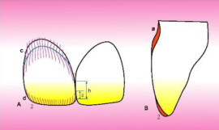
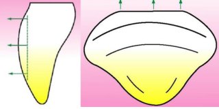
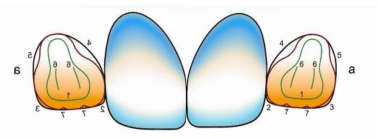
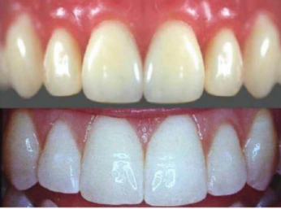
折衝沙場
- 選擇「唇面較平」，使光容易反彈的前牙：與溫柔嫻靜型正好極端的相反，要表現出陽剛的個性，就要讓排出的牙齒表現出激烈的反彈效果。
- 選擇「切緣較平、切緣角較稜角分明」的前牙：為了表現以牙還牙的狠勁。
- 最好能配合患者的臉形倒影來選，這些人通常臉形都是方形，因此選擇方尖(Square Taper)或方圓型(Square O void)的前牙。
- 排好牙後再將牙齒修得「切緣更平」、「切緣角更尖銳」。
- 有衝刺力
- 前牙排列呈「參差不平」，借光學折射呈現突出而不暴出。
- 上顎門齒切緣略向顎側，可將正中門牙遠心端排的較突出，表現出反彈效果。。
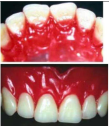
- 有決斷力
- 掌握「平」、「直」選牙時選切端平直、切緣角明顯的牙齒，排好後再將切緣角修飾更有稜有角
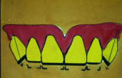
- 有精神
- 主要掌握在犬齒，將犬齒排得向內斜入，將犬齒平齊面朝向外方
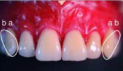
溫文儒雅
-
「圓」但「不可太柔」。
- 溫和：反抗性及反彈性不強。
- 清秀：乾乾淨淨而且順眼
-
唇面不要太平
-
不會太圓的切緣角
- 個性溫和不挑剔
- 排出溫和、順眼，正中門牙、側門牙、犬齒是慢慢順過去的，犬齒不要太斜。
- 選牙時選唇面不要太平、切緣、切緣角不要太圓的牙齒。
- 排牙時排成弧形，不要有前後的扭轉差異
- 個性固執脾氣硬
- 排出溫和但不順眼，側門齒的長軸比犬齒甚至正中門齒還向近心。
- 選牙時選唇面不要太平、切緣、切緣角不要太圓的牙齒。
- 排牙時排成弧形，可選一顆側門齒略微扭轉，但若略有微言立即調順
慈祥和藹型
- 依據患者雙眉以下之臉型選牙
- 女性將側門牙遠心端向內扭，男性將側門牙遠心端向外扭
- 牙齒修整
- Incisor edge約略作出咬耗型態
- Contact point變成 contact area
- 齒頸部略微刻露出來
- 甚至可以補銀粉使其看起來更像真牙
印模材考試
| 分類 | 材料 | 彈性 | 尺寸穩定性 | 細節再現 | 副產物 | 消毒方式 | 臨床重點 |
|---|---|---|---|---|---|---|---|
| Nonelastic | Impression plaster | ❌ | 普通 | 高 | 無 | （少用，未特別強調） | mucostatic、不壓組織 |
| ZOE paste | ⭐極佳 | ⭐高 | 無 | 2% alkaline glutaraldehyde | final impression 常用 | ||
| Impression compound | 普通 | 低 | 無 | NaOCl、iodophor、phenolic glutaraldehyde | border molding | ||
| Hydrocolloid | Agar | ✅ | 普通 | ⭐高 | 無 | NaOCl、iodophor、glutaraldehyde | 設備複雜、少用 |
| Alginate | ❗差 | 中 | 無 | 稀釋漂白水（1:10）、iodophor、phenol | ⭐primary impression | ||
| Elastomeric | Polysulfide | ❗差 | 高 | 水 | 可浸泡各種消毒液 | 需1hr內灌模 | |
| Condensation silicone | ❗差 | 高 | 酒精 | 可浸泡各種消毒液 | 收縮大 | ||
| Addition silicone (PVS) | ⭐極佳 | ⭐極高 | 無（可能H₂） | 可浸泡各種消毒液 | ⭐final impression | ||
| Polyether | ⭐佳 | ⭐高 | 無 | ❗不可浸泡>10分鐘（建議噴霧+密封） | 親水但易變形 |
期末
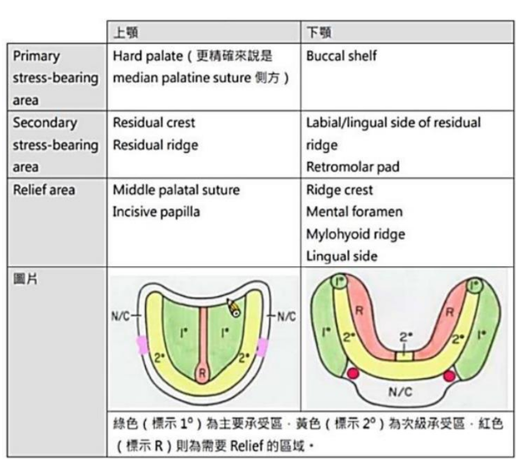
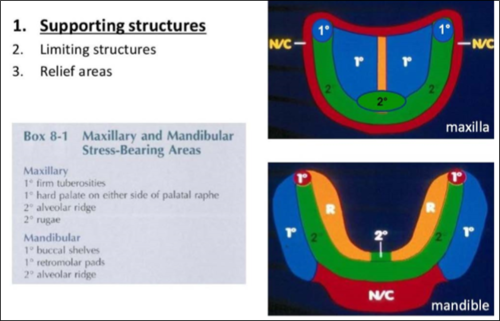